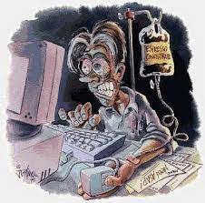

La Organización Mundial de la Salud (OMS) señala que una de cada cuatro personas sufre
trastornos de conducta relacionados con las nuevas adicciones. Se puede hablar de adicción en todos aquellos
casos en los que la afición interfiere en la vida diaria, o cuando se practica esa afición para no pasarlo mal
en vez de para pasarlo bien.

Recomendaciones indispensables:
1. Potenciar en nuestro núcleo familiar actividades de ocio saludable (deporte, lectura, manualidades,
actividades al aire libre, etc.)
2. Establecer con ellos una relación de confianza que nos permita hablar y dialogar de forma sincera y
abierta.
3. Controlar los tiempos de uso de las tecnologías.
4. Tener en cuenta la importancia de nuestro ejemplo. Nuestros hijos nos tienen como modelos y tienden a
imitar nuestras propias conductas ¿cómo insistirles en no abusar del ordenador si nosotros pasamos
demasiadas horas frente al mismo?
5. Ayudarles a desarrollar buenas habilidades sociales que les permitan el desarrollo de sanas
relaciones interpersonales.
Recomendaciones para prevenir la adicción al INTERNET:
1. Romper con las rutinas de conexión: si alguien usa el celular o el computador debemos indicar un
nuevo horario y usar señales y alarmas que le indiquen a la persona que ha pasado su tiempo y debe de
desconectarse.
2. Ayudar a la persona a elaborar un horario realista dentro del cual se contemple no solo el tiempo
dedicado a navegar e interactuar, sino también otras actividades importantes.Enseñar la capacidad
formativa de la red, incluyendo Internet como una herramienta de ayuda al estudio y a la formación.
3. En determinados casos instalar filtros de contenido que impidan a la persona el acceso a páginas con
contenido no
adecuado.
Cualquier tratamiento de adicciones tiene dos objetivos básicos: el abandono de la adicción y
la prevención de una recaída. Lo habitual es que en el tratamiento intervengan diversos especialistas como los
psiquiatras, psicólogos o trabajadores sociales, entre otros. De esta forma se analizan y tratan todas las
consecuencias que la adicción pueda tener en el ámbito laboral, social o familiar. En general se pueden definir
cuatro fases en el tratamiento de adicciones:
La persona afectada por la adicción debe ser consciente de que tiene un problema y de que necesita solucionarlo. En ese momento se decidirá a buscar ayuda y acudir a un médico para que analice el caso. Cuando la persona adicta da este paso es fundamental el apoyo de su pareja, amigos y familiares.
En esta fase se necesita el apoyo de un psicólogo y de otros especialistas para que la persona sea consciente de la adicción a las nuevas tecnologías que padece y vea las consecuencias que su conducta está causando en su vida y en su entorno.
Dejar la adicción a internet o al móvil requiere fuerza de voluntad y paciencia, además de apoyo. Poco a poco el paciente irá recuperando su vida habitual y a aprender a controlar el uso que hace de la tecnología.
Durante esta fase el paciente vuelve a recuperar las habilidades que tenía antes de comenzar con su adicción. Es decir, comenzará a relacionarse de forma sana y natural con su entorno, a compartir tiempo con su familia, a tener hábitos saludables y a respetar sus horas de sueño.